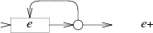

Regular Expression Matching Can Be Simple And Fast¶
原文： https://swtch.com/~rsc/regexp/regexp1.html
概要¶
Russ Cox 在这篇文章里介绍的算法和一般语言（PHP，Perl，Python等）的实现最大的区别在与不用回溯，该算法在遇到分支时，不是任选一个分支继续往下执行（失败时回溯选择下一分支），而是同时执行所有分支（将可能的状态加入一个集合），这样即使最坏的情况也可保证算法线性执行时间。
将正则表达式转换为 NFA¶
正则表达式的 NFA 可以由以下 NFA 片段组合而成：
匹配单个字符

字符串连接

分支
匹配 0 或 1 次

匹配 0 或多次

匹配 1 次或以上
(a*b?c+)* 的完整 NFA 如下图所示：
正则表达式匹配算法¶
遇到分支我们执行所有可能分支，记录下所有可能的下一步状态，然后接下去继续跟踪所有这些状态。如下图所示。
这一段逻辑使用 Go 描述大致如下：
type State struct {
c byte
out *State
out1 *State
}
// 输入当前状态集合以及遇到的下一个字符，返回下一步的状态集合
// map 的 key 为所有的可能状态。
func step(states map[*State]bool, c byte) map[*State]bool {
nstates := make(map[*State]bool)
for s, _ := range states {
if s.c == c {
addstate(nstates, s.out)
}
}
return nstates
}
func addstate(states map[*State]bool, s *State) {
if s == nil || states[s] {
return
}
// 对于分支状态节点，我们跟踪其所有的 out 状态
if s.c == Split {
addstate(states, s.out)
addstate(states, s.out1)
}
states[s] = true
}
我们可以根据最后的状态集合中是否包含了 匹配状态 来判断字符串是否匹配。
完整实现（Go版本）：https://gist.github.com/chanfung032/85c9637d6a15ae68a478d0c47ac3d810
Russ Cox 的 C 实现： https://swtch.com/~rsc/regexp/nfa.c.txt